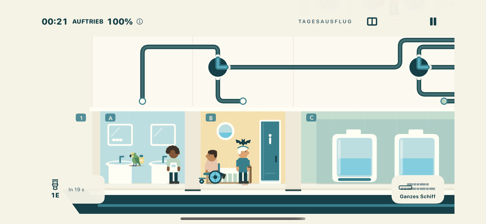

Sie machen Urlaub. Du nicht.
Frühstück, eine Dusche, ein verdächtig langer Toilettenbesuch. Kleine Gäste, fleißige Besatzungsmitglieder, Haustiere und Putzroboter haben alle etwas vor.
Für iPhone erhältlich

Die Gäste haben Pläne.
Die Rohre haben andere Ideen.
Halte ein kleines, herrlich chaotisches Kreuzfahrtschiff über Wasser.

Willkommen an Bord
Dreh eine Rohrverbindung. Folge dem Wasser.
Versuch, alle Socken trocken zu halten.

Ein bisschen Leute beobachten, ein bisschen Rohrpanik.
Auf dem nächsten Deck ist immer etwas los.
Frühstück, eine Dusche, ein verdächtig langer Toilettenbesuch. Kleine Gäste, fleißige Besatzungsmitglieder, Haustiere und Putzroboter haben alle etwas vor.
Tippe, um gemeinsame Rohrleitungen zu drehen und Abwasser zur Aufbereitung zu leiten. Behalte den nächsten Bedarf im Blick, ändere den Weg und komm zurück, bevor aus einer Pfütze ein Problem wird.
Fünf Schiffsgrößen. 12 bis 144 Räume. Zoome in die kleinen Geschichten hinein oder heraus, um Probleme zu erkennen. Entdecke auf jeder Fahrt einen neuen Grundriss.
Bereit zum Ablegen
Stay Afloat ist für iPhone erhältlich und wird im Querformat gespielt. Komm an Bord, halte das Wasser in Bewegung und finde heraus, wie lange deine Fahrt dauert.